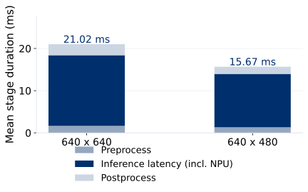

보드에서 검출·추적·제어를 연결
Orange Pi가 처리 흐름을 관리하고
NPU가 검출 모델 추론을 수행합니다.
열화상 입력부터 표적 선택과 짐벌 구동까지 하나의 시스템으로 연결했습니다.

Orange Pi가 처리 흐름을 관리하고
NPU가 검출 모델 추론을 수행합니다.
선택 정보를 보드에 전달하고,
짐벌이 카메라 방향을 조정합니다.
모델 입력 형식에 맞춰 변환하고, 검출 좌표를 원본 영상 기준으로 복원합니다.

clip 범위 · 입력 크기 · padding을 적용
학습·export 전처리와 일치해야 합니다.
배율과 여백을 함께 기록해 역변환
기본 예시는 scale 1 · 상하 여백 80px
단계별 대기를 분리하고, 최신성이 중요한 경로의 누적을 줄였습니다.

독립 thread를 queue로 연결 · 원본 프레임과 추적 결과를 함께 전달
| 큐 경로 | 전달 정책 |
|---|---|
| 카메라 → 탐지 | 최신 2개 유지 |
| 탐지 → 추적 | 제출 순서 복원 후 FIFO 전달 |
| 추적 → 제어 | 최신 1개 유지 |
| 추적 → GUI | 최신 2개 유지 |
최신 큐는 오래된 항목을 제거해
대기 중인 결과의 누적을 줄입니다.
추적에는 순서를 지켜 전달하고,
GUI에는 대응하는 프레임을 공유합니다.
영상과 객체 정보를 프레임 기준으로 연결하고, 명령과 상태를 주고받습니다.

같은 RTP timestamp를 연결 기준으로 사용
frame ID로 원본 프레임을 식별합니다.
ACK로 명령 처리 결과를 응답
STATUS로 모드·표적·짐벌 상태 전달
실제 카메라 프레임을 재사용하고, NPU 추론과 추적은 그대로 실행했습니다.
| 고정·기록 조건 | 시험 구성 |
|---|---|
| 실행 환경 | Orange Pi 5 Plus · DEEPX M1 |
| 처리 경로 | GUI·짐벌·ReID OFF · ByteTrack |
| 입력 공급 | 실제 16-bit 프레임을 메모리 재생 |
| 비교 조건 | 완료 대기 / inflight 1·4·6 |
| 측정 결과 | FPS · 누락 · 평균 / p95 / max |
실카메라 재측정도 30fps 미달
추론 비교에는 제어 입력 사용
5초 준비 → 15초 측정 × 3회
실제 공급 FPS와 시각도 검증
SDK·입력 크기 비교는 별도의
실카메라 30회 측정 결과
YOLO26s 640×640 · NPU_ALL · buffer 6 · 설치 SDK / 실카메라 시험과 메모리 재생 시험을 구분
같은 프레임·같은 모델에서 요청 중첩 여부와 미완료 요청 상한을 바꿨습니다.
| 제출 방식 | 완료 FPS | 누락 % | p95 ms | max ms |
|---|---|---|---|---|
| 완료 대기 | 49.18 | 18.3 | 54.0 | 59.1 |
| inflight 1 | 50.22 | 16.2 | 74.4 | 81.0 |
| inflight 4 | 60.00 | 0.0 | 22.7 | 30.8 |
| inflight 6 | 60.00 | 0.0 | 24.6 | 30.6 |
| 제출 방식 | 완료 FPS | 누락 % | p95 ms | max ms |
|---|---|---|---|---|
| 완료 대기 | 46.58 | 61.2 | 39.9 | 44.4 |
| inflight 1 | 50.20 | 58.0 | 58.5 | 69.2 |
| inflight 4 | 120.02 | 0.0 | 24.0 | 34.4 |
| inflight 6 | 120.00 | 0.0 | 23.7 | 30.2 |
네 조건 모두 완료 약 30fps · 누락 0%
관측 max와 장시간 보장은 구분
60fps에서 완료 대기 49.2 → inflight 6 60.0fps
과부하에서는 큐 대기·누락까지 함께 평가
각 조건 15초 × 3회 · 누락률만 종료 전 0.5초 제외 · p95는 반복 평균 / max는 전체 관측값
Format 변환과 CPU 연산 가속을 분리해 네 가지 SDK 조합을 측정했습니다.
YOLOv8n · 640×640 · use_ort=true · inflight 6
| Format / CPU | 출력변환 ms | CPU task ms | p95 ms | max ms | CPU % |
|---|---|---|---|---|---|
| OFF / OFF | 1.762 | 1.925 | 20.98 | 27.15 | 30.4 |
| OFF / ON | 1.945 | 1.151 | 17.98 | 77.48 | 28.8 |
| ON / OFF | 1.116 | 1.212 | 19.48 | 26.69 | 26.1 |
| ON / ON | 0.920 | 1.269 | 17.14 | 28.18 | 23.8 |
YOLO26s 출력변환 평균
1.633 → 0.630ms · 61.4% 감소
OFF / ON의 p95 17.98ms, max 77.48ms
가속 조합을 최악 지연과 함께 판단
SDK별 독립 libdxrt 사용 · XNNPACK 경로 확인 · p95는 반복 평균 / max는 조건별 45초 관측 최댓값
같은 카메라 원본에 서로 다른 모델 입력 형상을 적용해 단계별 비용을 확인했습니다.

| 측정 항목 | 640×640 | 640×480 |
|---|---|---|
| 전처리 평균 ms | 1.653 | 1.328 |
| NPU 평균 ms | 13.035 | 9.675 |
| E2E p95 ms | 23.67 | 17.96 |
| E2E max ms | 40.50 | 29.56 |
| RSS peak MiB¹ | 112.1 | 107.4 |
p95 24.1% 감소
NPU 시간 25.8% 감소
동일 계열의 입력 형상별 DXNN 비교 · 전처리 경로와 NPU 입력량이 함께 달라짐
전체 개선을 padding 제거 하나의 효과로 귀속하지 않음 · ¹ 반복별 host RSS peak의 평균
YOLO26s · 비동기 inflight 6 · 가속 ON/ON / 동일 학습·양자화 조건의 완전한 동등성은 미확인